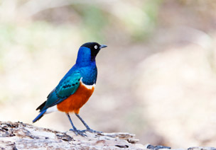
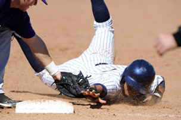

Before I start this tip, I should mention that trap focus mode is only available on digital SLR camera models. It is an advanced feature that will take a little technical expertise to master, but once you figure it out, it will improve your accuracy when you are taking pictures of moving subjects. Trap focus mode is currently available on most digital SLRs, even if it isn't advertised as such. Lets have a look.
Just like the name it's given, trap focus works by setting a trap for your subject. Once your subject moves into your trap, and your camera registers it as being in-focus, the shutter will release. This can come in handy when you're taking pictures of wildlife or sports because it ensures your subject is always in focus. Your camera won't take the picture unless it is!
Here are the basic of using trap focus:
For trap focus mode to work, you need your lens to be set to autofocus mode. You also need to adjust a few settings from the camera's main menu. Depending on the camera you're using, they might be located in different places within the main menu, but they're the same no matter which digital SLR you're using.
Here they are:
Each of these settings will help us set the trap. AF-S mode is convenient for this purpose because it stops the camera's autofocus from trying to refocus on a moving subject over and over again. AF-area mode confines the point of focus to the point that you pick, constraining the shot to spot where you expect your subject to be at some time in the future. And lastly, the AF-ON setting allows you to use the AE-L / AF-L button on the back of your camera to prefocus on the same spot.
Once you've picked these settings, you can set the trap. Instead of using the shutter button to focus on the area where you expect your subject to be, use the AE-L/AF-L button on the back of the camera. This button will setup the shot without accidentally firing the shutter.
When your subject comes into the focus, your camera will take the picture. If you've enabled continuous shooting, the camera will keep taking more pictures as long as your subject remains in-focus.
specific kind of shot, one in which you know where your subject will be. It's the difference between baseball and basketball. When you're shooting baseball, you know it's highly likely that your subject will run past the base. But when you're shooting basketball, you don't exactly know where your subject will be. In that case, you may want to avoid trap focus mode.
What are some other good examples? How about a wedding. If all goes according to plan, you can expect the bride and groom to walk straight down the aisle. You could pick one point along the aisle where you absolutely must get the shot, set the trap, hold down the shutter, and wait for them to cross it. Wedding photographers do this all the time to get a perfectly focused result.
Wildlife photography is another one, but it takes a little more patience. Some wildlife photographers set the trap and leave their camera alone. If the animal crosses the path and comes into focus, the camera will take the picture with no photographer.
Trap focus can be a little complicated to set up, but it's well worth the effort. If you've gotten some good results with it, let me know with a comment below. I'd love to see how it's working for you.
Source: Digital Photo Secrets